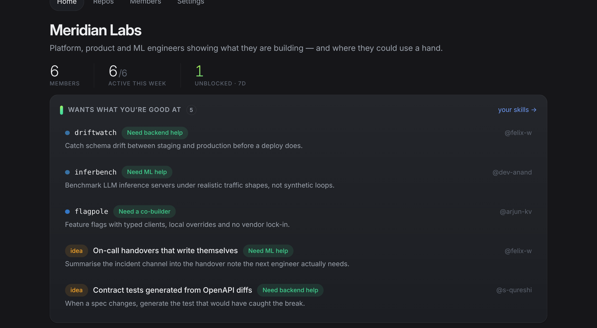
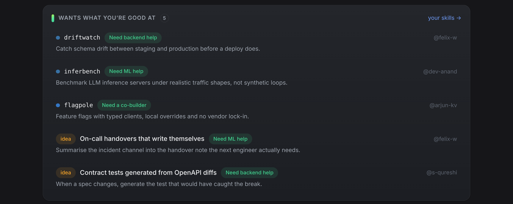
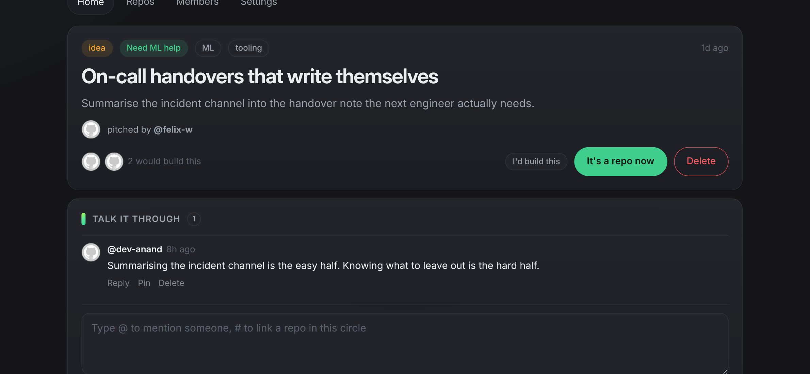
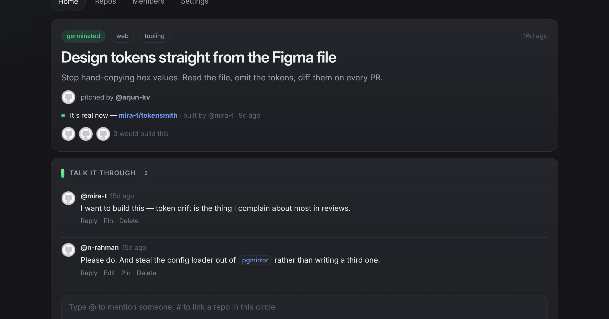
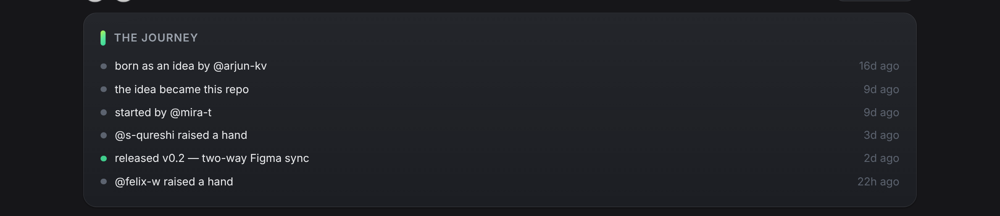
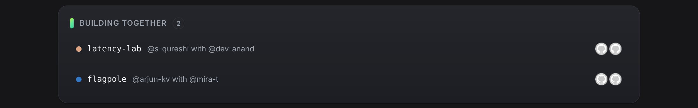
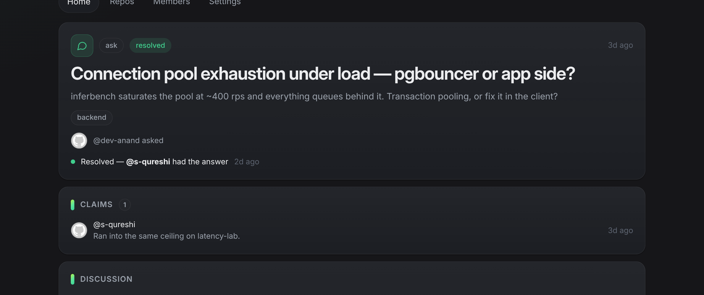
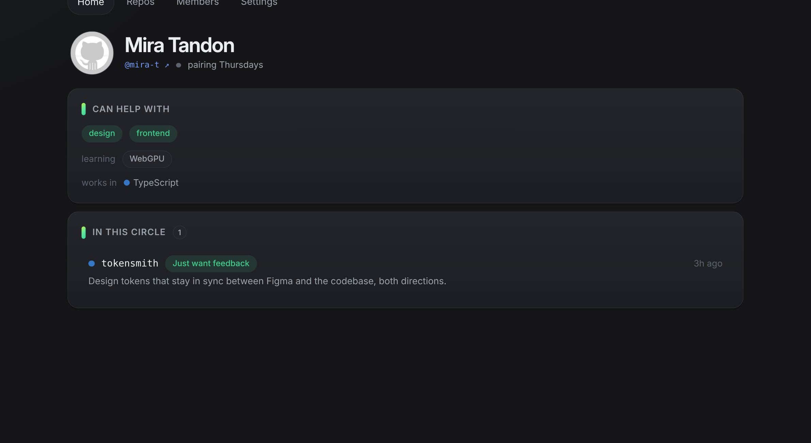
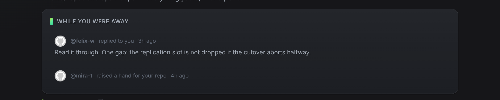
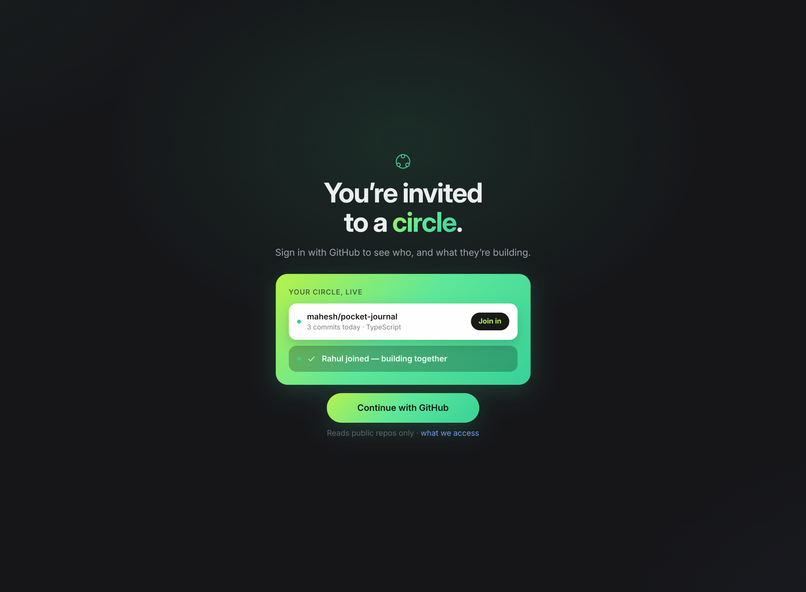

A private space where a group of engineers shares what they're working on — and pulls each other in.
Tooling stopped being the bottleneck. Direction and company didn't.
What's new, what's active, what needs a hand, and who just arrived.

Say what you can help with once. Projects that asked for exactly that come to you.

An idea needs no repository — just a sentence and the kind of help it wants.

The idea links to the repo it became. The person who builds it doesn't have to be the person who thought of it.

Assembled from facts the app already stores. Never counted, never ranked.

Ask for access in one tap. The circle sees a project with two names on it instead of one.

One fact on one ask — never a scoreboard.

What they can help with, what they're learning, and the languages they actually work in — derived from their repos.

Replies, mentions and raised hands — gathered when you visit, not pushed at you all day.

Nothing is visible until you join, and a private repository is never requested.

See what your circle is building. Ask to join in.